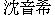
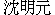
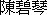
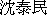
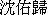
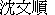
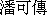

| | | | |
|---|
| Rebecca and Mark |
Rebecca Shen  |
| The Bride. Now happily married to Mark. Lives in Sunnyvale because she came up here to join OOCL. Dragged Mark, Houdini, and Purrbox with her. Worse actually, Mark had to drive Houdini and Purrbox to their new home. Rebecca is currently working for CTP at Schwab.
[ C P ] | | Rebecca before
* Rebecca processing
* Rebecca still processing
* Starting the ceremony: Mark and Rebecca, Anne Brunner, Carl, Frank, Susan, Anne, Howard
* Starting the ceremony: Mark and Rebecca, Jia-Hsi, Mary Ann, Daniel
* Parents support: Mary Ann, Jia-Hsi, Rebecca, Mark, Anne, Howard
* Vows: Rebecca, Reverend, Mark
* Kiss: Rebecca and Mark
* Retrieving the bouquet: Mary Ann, Mark, Rebecca
* Retrieving the ring: Mark, Rebecca, Howard, Anne
* Recession: Mark and Rebecca
* Formals: Rebecca and Mark
* Formals: Howard, Anne, Rebecca and Mark
* Formals: Jia-Hsi, Mary Ann, Rebecca and Mark
* Formals: Bea, Rebecca and Mark
* Formals: Bruce, Rebecca, Austin, Rachel, Mark, Jacob, and Daniel
* Formals, Front: Bruce, Austin, Jacob, Rebecca, Mark, and Daniel Back: Jia-Hsi, Mary Ann, Anne, Howard
* The dinner queue (Rebecca and Mark)
* Bea's toast (Anne, Larry, Bea, Mark, Rebecca)
* Rebecca Announcement
* Rebecca and Mario
* Rebecca's Hair-do
* Rebecca and Mario-2
* Rebecca and Mark
* Rebecca
* Rebecca and Mark cutting the cake
* Mark and Rebecca cutting the cake
* Cake Cutting (Rebecca and Mark)
* Rebecca and Mark dancing
* Dancing and Smooching (Anne and Carl, Christy and Hod, Mark and Rebecca)
* Salsa: Mark and Julie, Rebecca and Rob
* Rebecca in garden
* Rebecca in dressing room
* Goodbye from Mark and Rebecca
* Goodbye from Rebecca and Mark **********
* Rebecca and Mark
* Rebecca
* Rebecca and Butterfly
* Rebecca and Mark at East Coast reception
* Rebecca, Bruce, and Eleanor
* Mark and Rebecca in Nijo castle
* Rebecca sitting down dinner
* Rebecca at Taiwan University
* 1st Chen Uncle, Mark, wife, Mary Ann, Rebecca
|
Mark Fussell |
| The Groom. Now happily married to Rebecca. Lives in Sunnyvale because Rebecca came north to work for Bea. Lives in California because Caltech is in California and every year gets more attached to the area. Very much likes Rebecca's relatives. And, boy, there are a lot of them to like.
[ C P ] | | Mark before
* Howard, Mark, and Anne
* Signing the photo: Lori, Anne, and Mark
* Reverend and Mark processing
* Starting the ceremony: Mark and Rebecca, Anne Brunner, Carl, Frank, Susan, Anne, Howard
* Starting the ceremony: Mark and Rebecca, Jia-Hsi, Mary Ann, Daniel
* Parents support: Mary Ann, Jia-Hsi, Rebecca, Mark, Anne, Howard
* Vows: Rebecca, Reverend, Mark
* Kiss: Rebecca and Mark
* Retrieving the bouquet: Mary Ann, Mark, Rebecca
* Retrieving the ring: Mark, Rebecca, Howard, Anne
* Recession: Mark and Rebecca
* Formals: Rebecca and Mark
* Formals: Howard, Anne, Rebecca and Mark
* Formals: Jia-Hsi, Mary Ann, Rebecca and Mark
* Formals: Bea, Rebecca and Mark
* Formals: Bruce, Rebecca, Austin, Rachel, Mark, Jacob, and Daniel
* Formals, Front: Bruce, Austin, Jacob, Rebecca, Mark, and Daniel Back: Jia-Hsi, Mary Ann, Anne, Howard
* Rob, Jamie, Eamon, and Mark
* The dinner queue (Rebecca and Mark)
* Mark's Just Desserts
* Bea's toast (Anne, Larry, Bea, Mark, Rebecca)
* Mark's toast
* Mark and Beannie Seekers
* Rebecca and Mark
* Lynn, Mark Soloway, Mark Fussell, Phoenix, Faye
* Wayne and Mark
* Mark, Jens, Belinda, Erik, and Cathy
* Tim, Ed, Mark
* Rebecca and Mark cutting the cake
* Mark and Rebecca cutting the cake
* Cake Cutting (Rebecca and Mark)
* Rebecca and Mark dancing
* Dancing and Smooching (Anne and Carl, Christy and Hod, Mark and Rebecca)
* Salsa: Mark and Julie, Rebecca and Rob
* Goodbye from Mark and Rebecca
* Goodbye from Rebecca and Mark **********
* Rebecca and Mark
* Mark
* Rebecca and Mark at East Coast reception
* Lots of family and friends: Mark, Peter, Suzanne, Stephen, Gloria, Howard, Bob, Dottie, Shu Chin, Mary Ann
* Hanna, Mark, Andrew, Bruce, Claire and Ethan, Suzanne, Tom
* Mark and Rebecca in Nijo castle
* Mark in Kyoto
* Mark in Kyoto garden
* Mark at memorial
* 1st Chen Uncle, Mark, wife, Mary Ann, Rebecca
|
Mark's Parents and Siblings |
Anne Fussell |
| Mark's mother. Lives in Philadelphia. Ran a social service agency and still helps non-profit organizations. Unconvinced she should move out to California, but maybe a little closer to it. She and Howard are the parents of Susan, Sandra, and Mark.
[ C P ] | | Howard, Mark, and Anne
* Signing the photo: Lori, Anne, and Mark
* Starting the ceremony: Mark and Rebecca, Anne Brunner, Carl, Frank, Susan, Anne, Howard
* Parents support: Mary Ann, Jia-Hsi, Rebecca, Mark, Anne, Howard
* Retrieving the ring: Mark, Rebecca, Howard, Anne
* Formals: Howard, Anne, Rebecca and Mark
* Formals, Front: Bruce, Austin, Jacob, Rebecca, Mark, and Daniel Back: Jia-Hsi, Mary Ann, Anne, Howard
* Bea's toast (Anne, Larry, Bea, Mark, Rebecca)
* A successful match? (Rob and Anne)
* Beanabout (Anne, Lori, Larry, Sherry, Jens, Carl, Howard)
* Looking into the pond (Rachel and Anne)
* Fast and Slow: Anne and Howard, Hod and Christy
* The hosts: Howard and Anne
|
Howard Fussell |
| Mark's father. Lives in Philadelphia and loves gardening, tennis, golf, reading. Worked as a commercial shipping charterer.
[ C P ] | | Howard, Mark, and Anne
* Howard, George, and David
* Starting the ceremony: Mark and Rebecca, Anne Brunner, Carl, Frank, Susan, Anne, Howard
* Parents support: Mary Ann, Jia-Hsi, Rebecca, Mark, Anne, Howard
* Retrieving the ring: Mark, Rebecca, Howard, Anne
* Formals: Howard, Anne, Rebecca and Mark
* Formals, Front: Bruce, Austin, Jacob, Rebecca, Mark, and Daniel Back: Jia-Hsi, Mary Ann, Anne, Howard
* Teh-Chang and Howard
* Beanabout (Anne, Lori, Larry, Sherry, Jens, Carl, Howard)
* Say Cheese (Howard)
* Fast and Slow: Anne and Howard, Hod and Christy
* Howard's Gardening
* The hosts: Howard and Anne
* Lots of family and friends: Mark, Peter, Suzanne, Stephen, Gloria, Howard, Bob, Dottie, Shu Chin, Mary Ann
* Stephen, Howard, Phyllis, and Phyllis
* Gloria, Howard, Bob, Dottie, Shu Chin, and Mary Ann
|
Susan Fussell |
| Mark's eldest sister. Lives in Pittsburgh and works for CMU in human-computer interaction (A professor of psychology brought over to the dark side).
[ C P ] | | Starting the ceremony: Mark and Rebecca, Anne Brunner, Carl, Frank, Susan, Anne, Howard
* Penny, Susan, Julia and Edward Gil
|
Frank Joseph |
| Susan's companion. Lives in Pittsburgh and plays the harmonica.
[ C P ] | | Starting the ceremony: Mark and Rebecca, Anne Brunner, Carl, Frank, Susan, Anne, Howard
* Frank
|
Sandra Flewelling |
| Mark's elder sister. Lives in Portland, ME. She and Andrew are the parents of Hanna, Laura, and David.
[ P ] | | Lots of blonds: Sandra, Hanna, David, and Penny
* Sandra, David and Granmary
* Claire, Ethan, David, and Sandra
* Ethan, Sandra, David, and Granmary
* Rob, Ethan, Sandra, David, and Granmary
|
Andrew Flewelling |
| Sandra's husband. Lives in Portland, ME. He and Sandra are the parents of Hanna, Laura, and David.
[ P ] | | Hanna, Mark, Andrew, Bruce, Claire and Ethan, Suzanne, Tom
|
Hanna Flewelling |
| Sandra and Andrew's first daughter. Lives in Portland, ME and likes to play hockey.
[ P ] | | Lots of blonds: Sandra, Hanna, David, and Penny
* Hanna, Mark, Andrew, Bruce, Claire and Ethan, Suzanne, Tom
|
Laura Flewelling |
| Sandra and Andrew's second daughter. Lives in Portland, ME.
[ P ] | | Laura
|
David Flewelling |
| Sandra and Andrew's first son. Lives in Portland, ME.
[ P ] | | Lots of blonds: Sandra, Hanna, David, and Penny
* Sandra, David and Granmary
* Claire, Ethan, David, and Sandra
* Ethan, Sandra, David, and Granmary
* Rob, Ethan, Sandra, David, and Granmary
|
Rebecca's Parents and Siblings |
Ming-Yuan Shen  |
| Rebecca's father, Mary Ann's first husband, and the first Shen son. Died in 1972. Mary Ann and Ming-Yuan are the parents of Rebecca, Rachel, and Daniel.
| | Ming-Yuan Shen
|
Mary Ann Wu  |
| Rebecca's mother. Mary Ann and Ming-Yuan Shen are the parents of Rebecca, Rachel, and Daniel.
[ C P ] | | Mary Ann and Jia-Hsi
* Starting the ceremony: Mark and Rebecca, Jia-Hsi, Mary Ann, Daniel
* Parents support: Mary Ann, Jia-Hsi, Rebecca, Mark, Anne, Howard
* Retrieving the bouquet: Mary Ann, Mark, Rebecca
* Formals: Jia-Hsi, Mary Ann, Rebecca and Mark
* Formals, Front: Bruce, Austin, Jacob, Rebecca, Mark, and Daniel Back: Jia-Hsi, Mary Ann, Anne, Howard
* Mary Ann and Kim-Fai
* Mary Ann, Rachel, Austin
* Lots of family and friends: Mark, Peter, Suzanne, Stephen, Gloria, Howard, Bob, Dottie, Shu Chin, Mary Ann
* Gloria, Howard, Bob, Dottie, Shu Chin, and Mary Ann
* 1st Chen Uncle, Mark, wife, Mary Ann, Rebecca
|
Jia-Hsi Wu |
| Mary Ann's husband. Lives in San Dimas, California. Loves agriculture and has amazing fruits and vegetables in the back yard. Worked and taught at Cal Poly Pomona.
[ C ] | | Mary Ann and Jia-Hsi
* Starting the ceremony: Mark and Rebecca, Jia-Hsi, Mary Ann, Daniel
* Parents support: Mary Ann, Jia-Hsi, Rebecca, Mark, Anne, Howard
* Formals: Jia-Hsi, Mary Ann, Rebecca and Mark
* Formals, Front: Bruce, Austin, Jacob, Rebecca, Mark, and Daniel Back: Jia-Hsi, Mary Ann, Anne, Howard
|
Rachel Chang |
| Rebecca's sister. Lives in Seattle Washington where she is outnumbered 3-1 in her house. Works for CH2M Hill in between managing the kids.
[ C ] | | Formals: Bruce, Rebecca, Austin, Rachel, Mark, Jacob, and Daniel
* Mary Ann, Rachel, Austin
* Looking into the pond (Rachel and Anne)
* Rachel and Bruce
* Ann, Rachel, Bruce, Robert
|
Bruce Chang |
| Rachel Chang's husband. Lives in Seattle Washington and (now) does not work for either Boeing or Microsoft. Seems to like his new job.
[ C ] | | Formals: Bruce, Rebecca, Austin, Rachel, Mark, Jacob, and Daniel
* Formals, Front: Bruce, Austin, Jacob, Rebecca, Mark, and Daniel Back: Jia-Hsi, Mary Ann, Anne, Howard
* Bruce's prayer before dinner
* Rachel and Bruce
* Ann, Rachel, Bruce, Robert
|
Austin Chang |
| Bruce and Rachel's second (adorable) son.
[ C ] | | Formals: Bruce, Rebecca, Austin, Rachel, Mark, Jacob, and Daniel
* Formals, Front: Bruce, Austin, Jacob, Rebecca, Mark, and Daniel Back: Jia-Hsi, Mary Ann, Anne, Howard
* Mary Ann, Rachel, Austin
|
Jacob Chang |
| Bruce and Rachel's first son.
[ C ] | | Formals: Bruce, Rebecca, Austin, Rachel, Mark, Jacob, and Daniel
* Formals, Front: Bruce, Austin, Jacob, Rebecca, Mark, and Daniel Back: Jia-Hsi, Mary Ann, Anne, Howard
|
Daniel Shen |
| Rebecca's brother. Currently living in Oakland but commuting all over the country. Would rather be living in England so he could commute all over a different country.
[ C P ] | | Shen boys+1: Timothy Shen, Jason Shen, Daniel, Joe, and Mie-Yun
* Starting the ceremony: Mark and Rebecca, Jia-Hsi, Mary Ann, Daniel
* Formals: Bruce, Rebecca, Austin, Rachel, Mark, Jacob, and Daniel
* Formals, Front: Bruce, Austin, Jacob, Rebecca, Mark, and Daniel Back: Jia-Hsi, Mary Ann, Anne, Howard
* Timothy Shen and Daniel
* Timothy Shen, Daniel, Geoffrey
* Jason, Geoffrey (I'd Rather Have Lego) Chang, Daniel
|
Fussell Family |
Howard L. Fussell |
| Mark's Grandfather (Howard's father) [1885-1947]. Howard and Katharine are the parents of William, Howard, and Richard.
| | |
Katharine Fussell |
| Howard L. Fussell's wife [1890-1984]. Katharine and Howard are the parents of William, Howard, and Richard.
| | |
William Fussell |
| The first son of Howard L. Fussell and Katharine.
| | |
Leonor Fussell |
| William's wife.
| | |
Richard Fussell |
| The third son of Howard L. Fussell and Katharine. Richard lives in Berwyn, PA. Richard and Patricia are the parents of Brian and Cynthia.
[ P ] | | |
Patricia Fussell |
| Richard's wife.
[ P ] | | Pat, Granmary, Suzanne, and Tom McAvoy
|
McLear Family |
Mary McLear |
| Mark's Grandmother (Anne's mother). Also known as Granmary (at least to Mark's generation). Lives in Kennett Square, PA.
[ P ] | | Pat, Granmary, Suzanne, and Tom McAvoy
* Sandra, David and Granmary
* Ethan, Sandra, David, and Granmary
* Rob, Ethan, Sandra, David, and Granmary
|
William Z. McLear |
| Mark's Grandfather and Mary's husband [1903-1993].
| | |
Bill McLear |
| Mary and William's first son. Lives in Jacksonville, FL. Bill and Caryl Lord are the parents of Cynthia, Beverly, and David.
[ P ] | | |
Dottie McLear |
| Bill's wife.
[ P ] | | Lots of family and friends: Mark, Peter, Suzanne, Stephen, Gloria, Howard, Bob, Dottie, Shu Chin, Mary Ann
* Gloria, Howard, Bob, Dottie, Shu Chin, and Mary Ann
|
Penny Peterson |
| Mary and William's second daughter. Penny and Robert are the parents of Erik and Andy.
[ P ] | | Lots of blonds: Sandra, Hanna, David, and Penny
* Penny, Susan, Julia and Edward Gil
|
Robert Peterson |
| Penny's husband.
[ P ] | | Lots of family and friends: Mark, Peter, Suzanne, Stephen, Gloria, Howard, Bob, Dottie, Shu Chin, Mary Ann
* Gloria, Howard, Bob, Dottie, Shu Chin, and Mary Ann
|
Bruce McLear |
| Mary and William's second son. Bruce and Eleanor are the parents of Robert and Gavin.
[ P ] | | Rebecca, Bruce, and Eleanor
* Hanna, Mark, Andrew, Bruce, Claire and Ethan, Suzanne, Tom
|
Eleanor McLear |
| Bruce's wife. Bruce and Eleanor are the parents of Robert and Gavin.
[ P ] | | Rebecca, Bruce, and Eleanor
|
Robert McLear |
| The first son of Bruce and Eleanor.
[ P ] | | Rob, Ethan, Sandra, David, and Granmary
* Julia, Rob, Ethan
|
Claire McLear |
| Robert's wife.
[ P ] | | Hanna, Mark, Andrew, Bruce, Claire and Ethan, Suzanne, Tom
* Claire, Ethan, David, and Sandra
|
Ethan McLear |
| Robert and Claire's first son.
[ P ] | | Hanna, Mark, Andrew, Bruce, Claire and Ethan, Suzanne, Tom
* Claire, Ethan, David, and Sandra
* Ethan, Sandra, David, and Granmary
* Rob, Ethan, Sandra, David, and Granmary
* Julia, Rob, Ethan
|
Gavin McLear |
| The second son of Bruce and Eleanor.
[ P ] | | |
Jess Wege |
| Gavin's fiancée (and wife within a couple weeks).
[ P ] | | |
Cressman Family |
Stephen Cressman |
| Mary McLear's nephew. Stephen
[ P ] | | Lots of family and friends: Mark, Peter, Suzanne, Stephen, Gloria, Howard, Bob, Dottie, Shu Chin, Mary Ann
* Stephen, Howard, Phyllis, and Phyllis
|
Gloria Cressman |
| Stephen's wife.
[ P ] | | Lots of family and friends: Mark, Peter, Suzanne, Stephen, Gloria, Howard, Bob, Dottie, Shu Chin, Mary Ann
* Gloria, Howard, Bob, Dottie, Shu Chin, and Mary Ann
|
Shen Family |
Kim-Fai Thin |
| Rebecca's first Shen aunt. Lives in San Jose. Kim-Fai and Fujung are the parents of Shoumei, Shoufen, Jimmy, and Shouchang.
[ C ] | | Mary Ann and Kim-Fai
* David Shen, George Shen, Teh-Chang, Catherine, Fujung, Kim-Fai
|
Fujung Tsao |
| Kim-Fai's previous husband.
[ C ] | | David Shen, George Shen, Teh-Chang, Catherine, Fujung, Kim-Fai
|
Shoumei Chang |
| Rebecca's cousin (Kim-Fai's daughter)
[ C ] | | David, Charlene, Taymin, Shoumei, George
|
Jimmy Tsao |
| Rebecca's cousin (Kim-Fai's son)
[ C ] | | |
Joanna Tsao |
| Jimmy's wife.
[ C ] | | |
Shoufen Chien |
| Rebecca's cousin (Kim-Fai's daughter)
[ C ] | | |
Liang-Chg Chien |
| Shoufen's husband
[ C ] | | |
Alice Chien |
| Shoufen and Liang-Chg's daughter
[ C ] | | Joe, Alice, Timothy, and Jason
* Joe and Alice
* Alice and Jacqueline
* Jacqueline and Alice Dancing
|
Jacqueline Chien |
| Shoufen and Liang-Chg's daughter
[ C ] | | Alice and Jacqueline
* Jacqueline and Alice Dancing
|
Catherine Shih |
| Rebecca's second Shen aunt. Lives in Alexandria, Virginia and works for the Library of Congress. Catherine and Teh-Chang are the parents of June and Sandy.
[ C ] | | Josh, June, Catherine, and Teh-Chang
* David Shen, George Shen, Teh-Chang, Catherine, Fujung, Kim-Fai
* Teh-Chang and Catherine
* Catherine, Geoffrey, Teh-Chang
|
Teh-Chang Shih |
| Catherine Shih's husband. Lives in Alexandria, Virginia and is a medical doctor.
[ C ] | | Teh-Chang and Howard
* Josh, June, Catherine, and Teh-Chang
* David Shen, George Shen, Teh-Chang, Catherine, Fujung, Kim-Fai
* Teh-Chang and Catherine
* Catherine, Geoffrey, Teh-Chang
|
June Shih |
| Rebecca's cousin (Catherine and Teh-Chang's daughter). Lives in Washington DC and works for the President (seriously) as a speechwriter. Cool business card, and Washington does not seem to have harmed her too much.
[ C ] | | Josh, June, Catherine, and Teh-Chang
* Mie-Yun, Joe, Geoffrey, Josh, June
* Josh and June
* Josh and June Dancing
|
Josh Gerstein |
| June's companion.
[ C ] | | Josh, June, Catherine, and Teh-Chang
* Mie-Yun, Joe, Geoffrey, Josh, June
* Josh and June
* Josh and June Dancing
|
Taymin Liu  |
| Rebecca's third Shen aunt. Lives in Seattle Washington. Taymin gave a wonderful toast welcoming Mark into the Shen family. She and Paul are the parents of Joe and Ed.
[ C ] | | Jenen, Kee-Chuan, Wen-Shun, Taymin, Charlene
* Taymin's toast
* Taymin's Toast
* Liu Family (Taymin, Mie-Yun, Ed, Joe, Paul)
* Liu Family (Paul, Taymin, Mie-Yun, Joe)
* David, Charlene, Taymin, Shoumei, George
* Taymin and Paul Dancing
|
Paul Liu |
| Taymin's husband. Lives in Seattle but commutes to Taiwan to advise the government, education, and industry on intellectual property.
[ C ] | | Liu Family (Taymin, Mie-Yun, Ed, Joe, Paul)
* Liu Family (Paul, Taymin, Mie-Yun, Joe)
* Taymin and Paul Dancing
|
Joseph Liu |
| Rebecca's cousin (Paul and Taymin's son). Soon to live in San Francisco, but home is in Boston (unless Mie-Yun moves too).
[ C ] | | Shen boys+1: Timothy Shen, Jason Shen, Daniel, Joe, and Mie-Yun
* Mie-Yun, Joe, Geoffrey, Josh, June
* Jason and Joe constructing
* Liu Family (Taymin, Mie-Yun, Ed, Joe, Paul)
* Joe, Alice, Timothy, and Jason
* Liu Family (Paul, Taymin, Mie-Yun, Joe)
* Joe and Alice
|
Mie-Yun Lee |
| Joe Liu's wife. Lives in Boston and runs a company supporting small businesses.
[ C ] | | Shen boys+1: Timothy Shen, Jason Shen, Daniel, Joe, and Mie-Yun
* Mie-Yun and Timothy
* Mie-Yun, Joe, Geoffrey, Josh, June
* Liu Family (Taymin, Mie-Yun, Ed, Joe, Paul)
* Liu Family (Paul, Taymin, Mie-Yun, Joe)
|
Edward Liu |
| Rebecca's cousin (Paul & Taymin Liu's son). Educational expert (both in getting and giving: MBA, PhD, etc.)
[ C ] | | Ed Feasting
* Timothy Shen, Timothy Chang, Ed Liu, Irene, Tim Ma, Ingrid
* Liu Family (Taymin, Mie-Yun, Ed, Joe, Paul)
|
George Shen |
| Rebecca's second Shen uncle. Lives in Seattle. George is the father of Jason.
[ C ] | | Howard, George, and David
* David Shen, George Shen, Teh-Chang, Catherine, Fujung, Kim-Fai
* David, Charlene, Taymin, Shoumei, George
|
Jason Shen |
| Rebecca's cousin (George Shen's son).
[ C ] | | Shen boys+1: Timothy Shen, Jason Shen, Daniel, Joe, and Mie-Yun
* Jason and Joe constructing
* Joe, Alice, Timothy, and Jason
* Jason, Geoffrey (I'd Rather Have Lego) Chang, Daniel
|
David Shen  |
| Rebecca's third Shen uncle. Lives in Seattle and provides tours in the US and Canada. David and Chou-Fong are the parents of Michael and Timothy.
[ C ] | | Howard, George, and David
* David Shen, George Shen, Teh-Chang, Catherine, Fujung, Kim-Fai
* David, Charlene, Taymin, Shoumei, George
|
Timothy Shen |
| Rebecca's cousin (David Shen's son).
[ C P ] | | Shen boys+1: Timothy Shen, Jason Shen, Daniel, Joe, and Mie-Yun
* Timothy Shen, Timothy Chang, Ed Liu, Irene, Tim Ma, Ingrid
* Timothy Shen and Daniel
* Timothy Shen, Daniel, Geoffrey
* Irene, Ed, Tim Ma, Timothy Shen, Ingrid
|
Wen-Shun Pan  |
| Rebecca's fourth Shen aunt. Lives in Rochester New York (where much of Mark's family lives also). She and Kee-Chuan are the parents of Cindy and Charlie.
[ C ] | | Jenen, Kee-Chuan, Wen-Shun, Taymin, Charlene
|
Kee-Chuan Pan  |
| Wen-Shun's husband. Lives in Rochester New York.
[ C ] | | Jenen, Kee-Chuan, Wen-Shun, Taymin, Charlene
|
Charlene Chang |
| Rebecca's sixth Shen aunt. Lives in Palo Alto California, works as an immigration lawyer, and raises amazing kids (Geoffrey, Timothy, and Clara).
[ C ] | | Jenen, Kee-Chuan, Wen-Shun, Taymin, Charlene
* Clara and Charlene (up close)
* David, Charlene, Taymin, Shoumei, George
|
Luke Chang |
| Charlene Chang's husband. Lives in Palo Alto California and is also a lawyer.
[ C ] | | |
Jenen Chang |
| Luke Chang's father. Lives in Palo Alto.
[ C ] | | Jenen, Kee-Chuan, Wen-Shun, Taymin, Charlene
|
Geoffrey Chang |
| Rebecca's cousin (Lucas and Charlene's son). Amazingly talented person who organized the ceremony music for the wedding, knows how to play fifty different musical instruments, and accomplished this while spending 18 hours a day e-chatting.
[ C ] | | The Ceremony Begins: Music (Jenny, Allen, Geoffrey, Eric, Anna)
* Mie-Yun, Joe, Geoffrey, Josh, June
* Geoffrey (Lego my Lego) Chang
* Timothy Shen, Daniel, Geoffrey
* Catherine, Geoffrey, Teh-Chang
* Jason, Geoffrey (I'd Rather Have Lego) Chang, Daniel
|
Timothy Chang |
| Rebecca's cousin (Lucas and Charlene's son).
[ C ] | | Mie-Yun and Timothy
* Timothy Shen, Timothy Chang, Ed Liu, Irene, Tim Ma, Ingrid
* Timothy Chang
* Joe, Alice, Timothy, and Jason
|
Clara Chang |
| Rebecca's cousin (Charlene and Luke's daughter).
[ C ] | | Clara (Aww...)
* Clara and Charlene (up close)
|
Chen Family |
Shu Chin Liao |
| Mary Ann's first cousin. Lives in Oceanside, CA near San Diego.
[ C ] | | Shu Chin and An Pang
* Lots of family and friends: Mark, Peter, Suzanne, Stephen, Gloria, Howard, Bob, Dottie, Shu Chin, Mary Ann
* Gloria, Howard, Bob, Dottie, Shu Chin, and Mary Ann
|
An Pang Liao |
| Shu Chin's husband.
[ C ] | | Shu Chin and An Pang
|
Wayne Chen |
| Rebecca's cousin (first Chen uncle's first son). Lives in Oakland.
[ C ] | | Wayne and Mark
|
Bruce Chang's Family |
Ann Chang |
| Bruce's sister (our "indirect" sister in law). Lives in Portland, Oregon.
[ C ] | | Ann, Rachel, Bruce, Robert
|
Robert Chang |
| Bruce's father. Lives in Portland, Oregon.
[ C ] | | Ann, Rachel, Bruce, Robert
|
Friends |
Beatrice Lam |
| Met at OOCL. Lives in Sunnyvale, married to Luke Manley, and is the person responsible for bringing Rebecca and Mark up to Northern California to join the OOCL project. Also (with Luke) responsible for all the wonderful wines at dinner and for making sure Belinda showed up.
[ C ] | | Formals: Bea, Rebecca and Mark
* Bea's toast (Anne, Larry, Bea, Mark, Rebecca)
* Bea's toast (Anne, Larry, Bea, Mark, Rebecca)
* Cathy and Bea
* Luke and Bea
|
Luke Manley |
| Bea's husband. Lives in Sunnyvale and is the head of VTL (Vacuum Tube Logic) a high-end tube amplifier company. Luke loves to travel. Under Bea's influence, Luke even loves Wagner operas.
[ C ] | | Luke and Bea
|
Larry Allen |
| Met at OOCL. Lives in the Diamond Heights area of San Francisco and tries to have less than a one-hour commute or at least to take a ferry.
[ C ] | | Bea's toast (Anne, Larry, Bea, Mark, Rebecca)
* Beanabout (Anne, Lori, Larry, Sherry, Jens, Carl, Howard)
* Larry
|
Lori Motko |
| Met at OOCL. Lori lives just around the corner (figuratively) from Rebecca and Mark, and just around the corner (literally) from Erik. Lori now works at Envive (no not that), Channel-A (no, not that either), KBS? (no)... well, maybe she works for Actionace, but we wouldn't put that phone number in our Palm Pilots yet.
[ C ] | | Signing the photo: Lori, Anne, and Mark
* Beanabout (Anne, Lori, Larry, Sherry, Jens, Carl, Howard)
* Erik and Lori
|
Erik Larsen |
| Lori's companion. Lives in Sunnyvale and works for JavaSoft/Sun. Can produce really artistic kisses... We all have seen the results.
[ C ] | | Erik and Lori
* Mark, Jens, Belinda, Erik, and Cathy
|
Eric Kawamoto |
| From Lloyd house, Caltech. Now living in Portland, Maine and working on a veterinary analysis machine. Must wear gloves when touching evil com-pu-ters.
[ C ] | | Hod, Christie, and Eric
* Sue, Tom, and Eric
* Eric, Anne, Carl, Shang, Patrick, Mario
* Rob, Julie, and Eric
|
Julie Geremia |
| From heaven: gives great massages and loves Latin dancing (yes, you certainly must remember her).
[ C ] | | Wines make everyone a better socializer (Julie and Cathy)
* Rob, Julie, and Eric
* Julie
* Julie
* Salsa: Mark and Julie, Rebecca and Rob
|
Ricardo Torres |
| Julie's companion.
[ C ] | | |
Patrick Cotter |
| From Rebecca's high school. Lives in Redondo Beach (dude) but is unfortunately a lawyer.
[ C ] | | Eric, Anne, Carl, Shang, Patrick, Mario
* Mario and Patrick
* Shang and Patrick
|
Mario Rivera |
| Patrick Cotter's companion. Mario started the Beannie Baby thing by giving Rebecca a Princess Di Bear and a unicorn.
[ C ] | | Eric, Anne, Carl, Shang, Patrick, Mario
* Mario and Patrick
* Rebecca and Mario
* Rebecca and Mario-2
|
Shang Lee |
| From Rebecca's high school. Lives and plays out in deserts.
[ C ] | | Eric, Anne, Carl, Shang, Patrick, Mario
* Carl and Shang
* Shang and Patrick
|
Carl Masser |
| From Lloyd house, Caltech. Lives in Santa Clara and works about a five-minute walk away from Rebecca and Mark's house.
[ C ] | | Starting the ceremony: Mark and Rebecca, Anne Brunner, Carl, Frank, Susan, Anne, Howard
* Eric, Anne, Carl, Shang, Patrick, Mario
* Beanabout (Anne, Lori, Larry, Sherry, Jens, Carl, Howard)
* Anne and Carl
* Christy, Hod, Anne, Carl
* Hod's Revenge
* Dangerous Dancing Carl
* Dancing and Smooching (Anne and Carl, Christy and Hod, Mark and Rebecca)
* Carl and Shang
|
Anne Brunner |
| Carl's companion. Lives in Palo Alto, drives VWs all year round with the top down, and seems to love to waltz. Swiss thing.
[ C ] | | Starting the ceremony: Mark and Rebecca, Anne Brunner, Carl, Frank, Susan, Anne, Howard
* Eric, Anne, Carl, Shang, Patrick, Mario
* Anne and Carl
* Christy, Hod, Anne, Carl
* Dancing and Smooching (Anne and Carl, Christy and Hod, Mark and Rebecca)
|
Sherry Erskine |
| Met at OOCL. Has a house in Carmel, but may rarely be there.
[ C ] | | Christy, Sherry, Rick, Rob, Cathy, Jens
* Beanabout (Anne, Lori, Larry, Sherry, Jens, Carl, Howard)
* Sherry, Rick, and Rob
|
Rick Kawala |
| Met at OOCL. Lives in the heart of San Francisco. Sometimes works, sometimes just goes and enjoy the San Francisco Film Festival.
[ C ] | | Christy, Sherry, Rick, Rob, Cathy, Jens
* Sherry, Rick, and Rob
|
Robert Mee |
| Met at OOCL and the only one that returned (weirdo). Lives with his parents in Los Gatos... oh wait, late breaking news... actually moved out from his parents' house into San Francisco. Usually is traveling the world or working, so really does not need a house.
[ C ] | | Christy, Sherry, Rick, Rob, Cathy, Jens
* Rob, Julie, and Eric
* A successful match? (Rob and Anne)
* Rob, one of the dinner's delicacies
* Sherry, Rick, and Rob
* Salsa: Mark and Julie, Rebecca and Rob
|
Cathy Moran |
| Met at OOCL. Lives in the East Bay so she is nearer work or horses or something. Works for Intel.
[ C ] | | Wines make everyone a better socializer (Julie and Cathy)
* Christy, Sherry, Rick, Rob, Cathy, Jens
* Cathy and Bea
* Mark, Jens, Belinda, Erik, and Cathy
|
Jens Farley |
| Met through Bea's music night (which also includes serious feasting). An avid fan of classical music and all around really nice guy, but dislikes Wagner, to Bea's chagrin. Jens works for HP and is beginning to collect VTL equipment.
[ C ] | | Christy, Sherry, Rick, Rob, Cathy, Jens
* Beanabout (Anne, Lori, Larry, Sherry, Jens, Carl, Howard)
* Mark, Jens, Belinda, Erik, and Cathy
|
Hod Greeley |
| From Lloyd house, Caltech. Another Techer who moved to the Bay Area to become a compu-geek. Works for Network Associates between Bomber Man sessions.
[ C ] | | Hod, Christie, and Eric
* Hod's Toast
* Christy, Hod, Anne, Carl
* Hod, Eric, Carl
* Hod's Revenge
* Fast and Slow: Anne and Howard, Hod and Christy
* Dancing and Smooching (Anne and Carl, Christy and Hod, Mark and Rebecca)
|
Christy Symanski |
| Hod's companion. Also works for Network Associates between Bomber Man sessions.
[ C ] | | Christy, Sherry, Rick, Rob, Cathy, Jens
* Christy, Hod, Anne, Carl
* Christy
* Fast and Slow: Anne and Howard, Hod and Christy
* Dancing and Smooching (Anne and Carl, Christy and Hod, Mark and Rebecca)
|
Edward Koo |
| From Ruddock house, Caltech. Lives in El Cerrito, CA.
[ C ] | | Tim, Ed, Mark
* Irene, Ed, Tim Ma, Timothy Shen, Ingrid
|
Ingrid Chou |
| Ed's companion. A PhD candidate in Public Health at UC Berkeley. Ingrid is also a close friend of Daniel.
[ C ] | | Timothy Shen, Timothy Chang, Ed Liu, Irene, Tim Ma, Ingrid
* Irene, Ed, Tim Ma, Timothy Shen, Ingrid
|
Tim Ma |
| From Ruddock house, Caltech. Lives in Torrance.
[ C ] | | Timothy Shen, Timothy Chang, Ed Liu, Irene, Tim Ma, Ingrid
* Tim, Ed, Mark
* Irene, Ed, Tim Ma, Timothy Shen, Ingrid
|
Irene Ma |
| Tim's wife. Lives in Torrance.
[ C ] | | Timothy Shen, Timothy Chang, Ed Liu, Irene, Tim Ma, Ingrid
* Irene, Ed, Tim Ma, Timothy Shen, Ingrid
|
Tom Lepich |
| Met at SCE and terminally controlled by his inner child. Somehow manages to still work but mostly plays Baldur's Gate.
[ C ] | | Sue, Tom, and Eric
* Tom and Sue
* Dangerous Tom
* Hungry Tom
* Tom and Sue cross-feeding
* Phoenix, Faye, Lynn, Mark, Tom, Sue
* Hanna, Mark, Andrew, Bruce, Claire and Ethan, Suzanne, Tom
|
Sue Lepich |
| Tom's wife. Wonderful mother of three. Lives in Orange County where her father is a sheriff. Don't mess with her.
[ C ] | | Sue, Tom, and Eric
* Tom and Sue
* Tom and Sue cross-feeding
* Phoenix, Faye, Lynn, Mark, Tom, Sue
|
Phoenix Tong |
| Met at OOCL. Phoenix now works for Agorics. Loves photography (should have had him do our pictures), his wife and home, and life in general.
[ C ] | | Lynn, Mark Soloway, Mark Fussell, Phoenix, Faye
* Phoenix, Faye, and first child
* Phoenix, Faye, Lynn, Mark, Tom, Sue
|
Faye Tong |
| Phoenix's wife. Lives in Burlingame and some how puts up with Phoenix being in the same home.
[ C ] | | Lynn, Mark Soloway, Mark Fussell, Phoenix, Faye
* Phoenix, Faye, and first child
* Phoenix, Faye, Lynn, Mark, Tom, Sue
|
Mark Soloway |
| Met at OOCL. Lives in the hills overlooking Orinda, California and works for Actuate.
[ C ] | | Mark Soloway, Lynn, and Beannie Doggie
* Lynn, Mark Soloway, Mark Fussell, Phoenix, Faye
* Phoenix, Faye, Lynn, Mark, Tom, Sue
|
Lynn Soloway |
| Mark Soloway's wife. Lives in the hills overlooking Orinda California and works for Stanford Medical Center.
[ C ] | | Mark Soloway, Lynn, and Beannie Doggie
* Lynn, Mark Soloway, Mark Fussell, Phoenix, Faye
* Phoenix, Faye, Lynn, Mark, Tom, Sue
|
Belinda So |
| Met at OOCL and the only one who has been there continuously for the last five+ years. Loves music, opera, hiking, karaoke, but it is sometimes difficult to get her out of the office.
[ C ] | | Kevin and Belinda
* Mark, Jens, Belinda, Erik, and Cathy
|
Kevin Rugg |
| Met at OOCL. Lives in Redwood City and fishes from his balcony. Likes stability in life and can calmly talk with moose.
[ C ] | | Kevin and Belinda
* Kevin's Toy
|
Rob Feuerman |
| Met at CTP and the BidLink project. Lives in San Francisco. Founder of RetailAspect, which coincidentally is working with Island Pacific (one of Mark's current clients).
[ C ] | | Rob, Jamie, Eamon, and Mark
* Rob Feuerman and Eamon
|
Jamie Feuerman |
| Rob Feuerman's wife. Lives in San Francisco.
[ C ] | | Rob, Jamie, Eamon, and Mark
|
Shahram Moetezedi |
| Met at CTP. A runner: runs here, runs there, runs in marathons,.... you get the picture. Works for Oblix and sleeps in Mountain View between runs.
[ C ] | | Shahram
* Lisa and Shahram
|
Éamon Ó Néil |
| Met at CTP. Lives and works in San Francisco.
[ C ] | | Rob, Jamie, Eamon, and Mark
* Rob Feuerman and Eamon
|
Lisa Goodrich |
| Éamon's wife, and wonderfully came to the wedding just 48 hours before starting (and 68 hours before completing) delivery of her first child Thomas. Lives in San Francisco and works at UCSF.
[ C ] | | Lisa and Shahram
* Lisa and friends
|
Sean McNamara |
| From Ruddock house, Caltech. Currently back living in the states after several years in Europe (where he found or was found by Marie).
[ P ] | | |
Marie-Benedicte McNamara |
| Sean's wife.
[ P ] | | |
Family Friends |
Phyllis Corney |
| Howard met while working at Lavino Shipping. Phyllis lives in Wayne, PA.
[ P ] | | Stephen, Howard, Phyllis, and Phyllis
|
Guy Spencer |
| Howard met on the tennis courts of Waynesborough.
[ P ] | | |
Edward Gil |
| Howard met while working at Lavino Shipping.
[ P ] | | Penny, Susan, Julia and Edward Gil
|
Julia Gil |
| Edward's wife.
[ P ] | | Penny, Susan, Julia and Edward Gil
* Julia, Rob, Ethan
|
Peter Thompson |
|
[ P ] | | Lots of family and friends: Mark, Peter, Suzanne, Stephen, Gloria, Howard, Bob, Dottie, Shu Chin, Mary Ann
|
Suzanne Thompson |
|
[ P ] | | Lots of family and friends: Mark, Peter, Suzanne, Stephen, Gloria, Howard, Bob, Dottie, Shu Chin, Mary Ann
* Pat, Granmary, Suzanne, and Tom McAvoy
* Hanna, Mark, Andrew, Bruce, Claire and Ethan, Suzanne, Tom
|
Tom McAvoy |
| Howard and Anne met on the tennis courts of Waynesborough.
[ P ] | | Pat, Granmary, Suzanne, and Tom McAvoy
|
Ceremony Music |
Jenny Meyer |
| Part of Geoffrey's wind quintet. Played the flute.
[ C ] | | The Ceremony Begins: Music (Jenny, Allen, Geoffrey, Eric, Anna)
|
Allen Edwards |
| Part of Geoffrey's wind quintet. Played the oboe.
[ C ] | | The Ceremony Begins: Music (Jenny, Allen, Geoffrey, Eric, Anna)
|
Anna Oh |
| Part of Geoffrey's wind quintet. Played the clarinet.
[ C ] | | The Ceremony Begins: Music (Jenny, Allen, Geoffrey, Eric, Anna)
|
Eric Brinkmann |
| Part of Geoffrey's wind quintet. Played the bassoon.
[ C ] | | The Ceremony Begins: Music (Jenny, Allen, Geoffrey, Eric, Anna)
|
Pets |
Houdini |
| Rebecca's first cat. A beautiful Norwegian Forest Cat that is quite friendly and intelligent but eats too many plants.
| | Houdini
|
Purrbox |
| Rebecca and Mark's second cat. A motley smokey black cat that purrs incessantly and sleeps incessantly between feedings.
| | Purrbox
|
Chi-Chi |
| Anne and Howard's big black lab.
| | |
Muti |
| Anne and Howard's little black lab.
| | Muti
|
Littlebit |
| Anne and Howard's last remaining cat (out of a peak of 4).
| | |
The following people attended the ceremony and reception at Kohl Mansion in California.
The guests who attended at Kohl Mansion were seated in the following groups (in case you want a reminder of who was at your table).
Thank you all for coming.